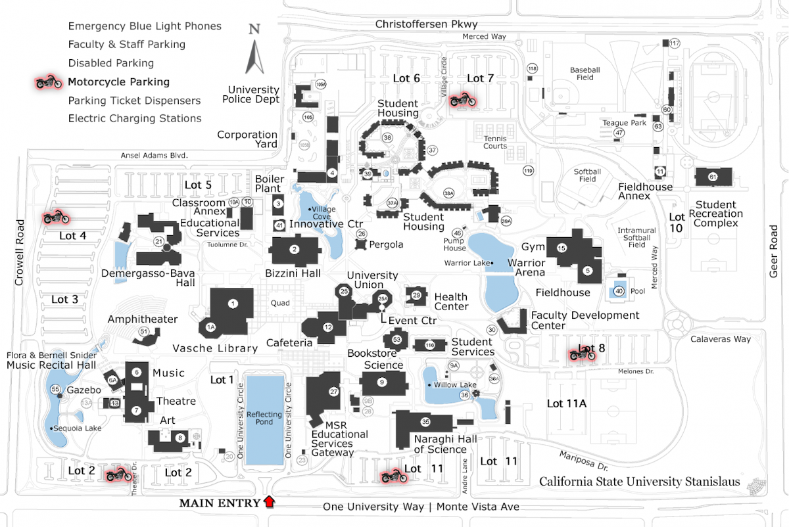
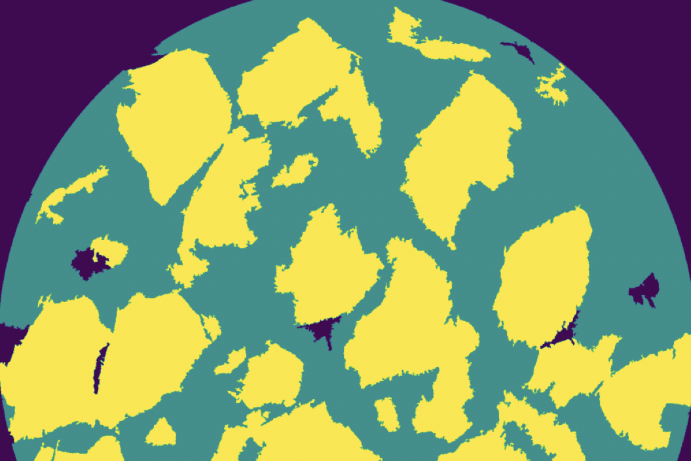
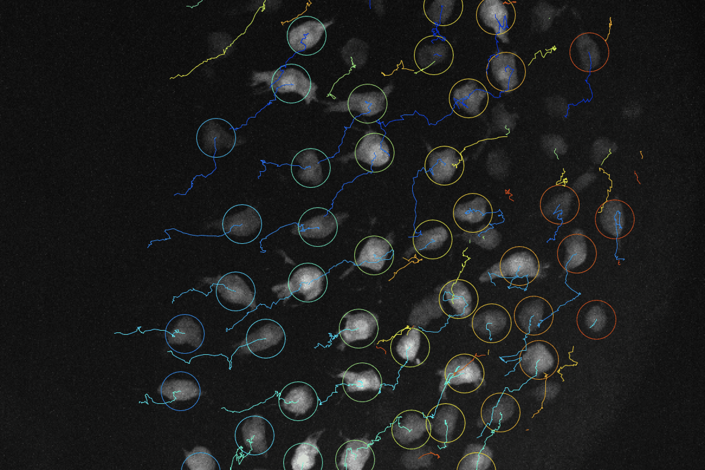
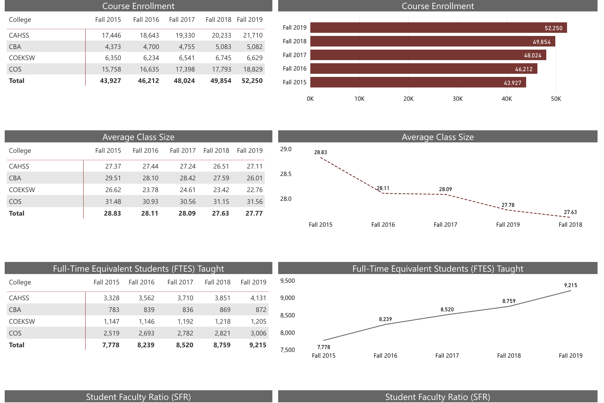

Analysis of Campus Walking Times
Co-Advisors: Dr. Curtis Pro
Students: Andrew [1], Sam [2], Felice [2], Morgan [3], Teresa [4], Jonathan [1], Jasmin [4], & Juan [4]
Majors: [1]Computer Science, [2]Chemistry, [3]Physics, [4]Mathematics
If you signed up for two MWF classes back-to-back, you have approximately minutes to travel from one course location to the next. This time constraint induces student traffic across campus and can result in consistent tardiness. We collected data to approximate the typical walking speed of a Stan State student and used this to produce the average time it will take to walk between pairs of buildings on campus. Our data suggests that you may be late for you next class if you are a slow walker or if walking paths are congested.
Mathematical Measures of Fairness in Legislative Districting
Majors: Computer Science & Mathematics
Gerrymandering is the term used to describe the drawing of legislative districts to favor one party over another. Recently, many mathematicians have tried to develop mathematical tools to decide if legislative districts are gerrymandered, and define fair methods of districting. For example, Landau, Reid, and Yershov [A Fair Division Solution to the Problem of Redistricting, Social Choice and Welfare, 2008] propose a protocol for districting based on a two-player fair-division process, where each player is entitled to draw the districts for a portion of the state. We call this the LRY protocol.
This research was done at the Carnegie Mellon University Summer Undergraduate Applied Mathematics Institute (SUAMI).
Turán Numbers of Vertex-Disjoint Cliques in r-partite Graphs
The Turán number of two graphs G and H is the maximum number of edges in a subgraph of G that contains no copy of H. In this project, we studied the Turán numbers of complete r-partite graphs and disjoint copies of complete graphs on r vertices.
This research was done at the Carnegie Mellon University Summer Undergraduate Applied Mathematics Institute (SUAMI).
Anti-Ramsey Multiplicities
The Ramsey multiplicity constant of a graph H is the minimum proportion of copies of H in the complete graph which are monochromatic under an edge-coloring of the complete graph on n vertices as n goes to infinity. A graph H is called r-anti-common if the maximum proportion of rainbow copies of H in any r-coloring of the edges of the complete graph on n vertices is asymptotically achieved by taking a random coloring. We disproved the conjecture that all bipartite graphs are anti-common.
This research was done at the Carnegie Mellon University Summer Applied Mathematics Institute (SUAMI).

Hypergraph-Based Image Segmentation
Students: Darcy & Juan
Majors: Mathematics
During the summer of 2020, we had the opportunity to participate in the Visiting Faculty Program (VFP) at Lawrence Berkeley National Laboratory. During this 10 week program, we worked under Talita Perciano from the Data Analytics and Visualization research group at LBNL. I met Talita when I participated in the Sustainable Research Pathways Workshop. Although a virtual summer research program wasn't ideal, we still had a lot of fun learning about graph theory, image segmentation, and how to code in C++.
The following semester, both Darcy and Juan were supported by the Stan State SERSCA program.
Mean-Shift Clustering in C++
Students: Andrew & Jasmin
Majors: Computer Science & Mathematics
In the VFP image segmentation algorithm, we applied the k-means clustering algorithm to create the hypergraph model for the image. In other hypergraph-based segmentation algorithms, mean-shift clustering also produced great results. However, we did not find a suitable C++ implementation of the mean-shift algorithm. Andrew and Jasmin worked together to understand the Python implementation of the mean-shift algorithm and bandwidth approximation in order to reproduce it in C++. We hope to then be able to incorporate this in the image segmentation algorithm and compare results to that of the k-means version.
Andrew and Jasmin were both supported by CSU-LSAMP.
Pokemon GO! PVP Optimization
Co-Advisors: Dr. Jon Brown (Bakersfield College)
Students: Kevin, Pablo (BC), & Ed (BC)
Majors: Computer Science
This project was brought to us by Dr. Brown from Bakersfield College who I met through the Pacific Math Alliance. Funny enough, Dr. Brown is also an alumnus from Stan State! He has worked with BC students in the past to apply game theory to analyze Pokemon GO!. In this project, we were interested in analyzing PVP battles in which you choose three of your Pokemon to fight three of your opponent's Pokemon. You can swap between any of your three Pokemon throughout the battle and can shield against charge attacks exactly twice. The player wins if they defeat all their opponent's Pokemon, or if the match time ends and they have the most Pokemon/health remaining.
Kevin was supported by the Stan State RISE program.

Modeling Embryo Cell Migration and Adhesion
Students: Jesselynn
Majors: Mathematics
In this collaboration, I have had so much fun learning about cellular biology from Jesselynn. Jesselynn was a Lab Assistant in Dr. Stephanie Woo's lab at UC Merced while being a full-time math major at Stan State. In the Woo Lab, Jesselynn captures videos of zebrafish embryo cells migrating to uniformly spread out before coming together to form an endodermal sheet. We are using Fiji/ImageJ to obtain data from these videos which we will then analyze in Python to better understand cell migration. Jesselynn will be starting the Quantitative Systems Biology PhD Program at UC Merced in Fall 2022.
Jesselynn was supported by the Stan State RISE program.

Predictive Modeling of Mathematics Course Enrollment and Success
Students: Aaron & Shirley
Majors: Mathematics
We worked with Stan State's Institutional Effectiveness and Analytics (IEA) team to study recent trends in our mathematics major courses. In recent semesters, the Mathematics Department has needed to offer more sections of lower and upper divison mathematics courses. This project applied statistical methods to analyze opportunity gaps in certain math major classes disagregated by gender, first-generation status, and underrepresented minority groups.
Aaron & Shirley were both supported as a PUMP Undergraduate Research Group (URG) and through the Stan State RISE program.

Predictive Modeling of Track Performances
Students: Rommell
Majors: Physics
Rommell has a passion for running track, he was an all-star athlete in high school and even competed on Stan State's track team. Using data from Athletic.net, we analyzed how an athlete's 800 meter time is related to their gender, grade level, and season records for the 400 meter and/or 1600 meter. It is often believed that there are strong correlations between these events, the best 400m runners often do very well in the 800m and similarly for the 1600m. Although Rommell has since graduated with his Physics & Astronomy undergraduate degree from Stan State, he is continuing to work on this project while working in a Physics Lab at UC Santa Barbara.
Rommell was in the Cal-Bridge program for undergraduates studying astronomy and/or physics.